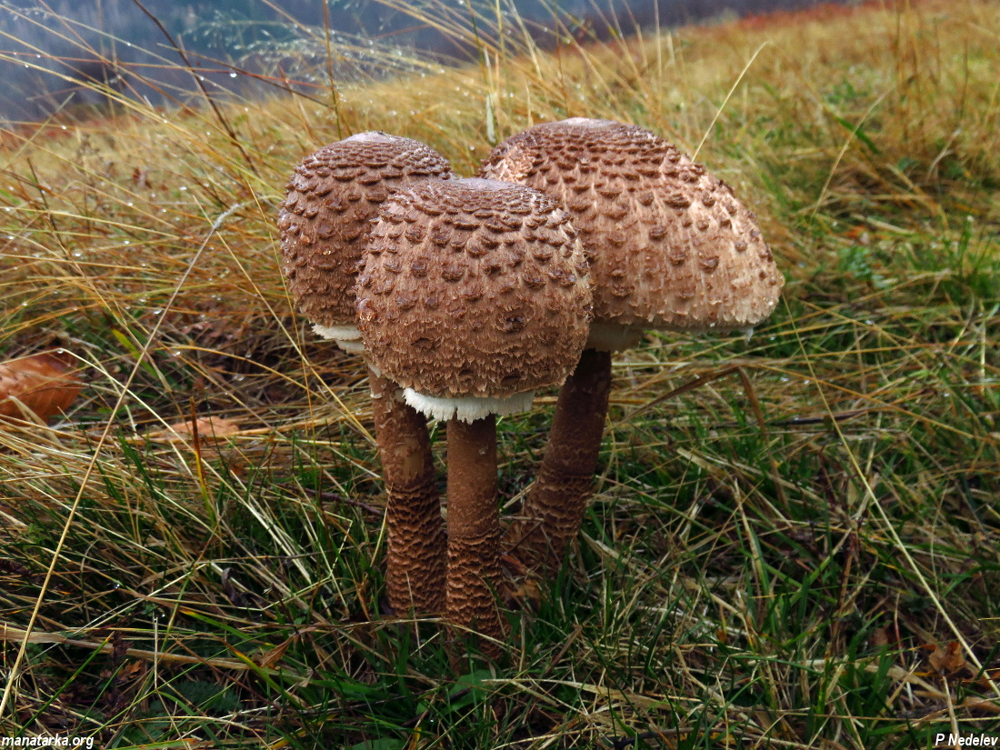
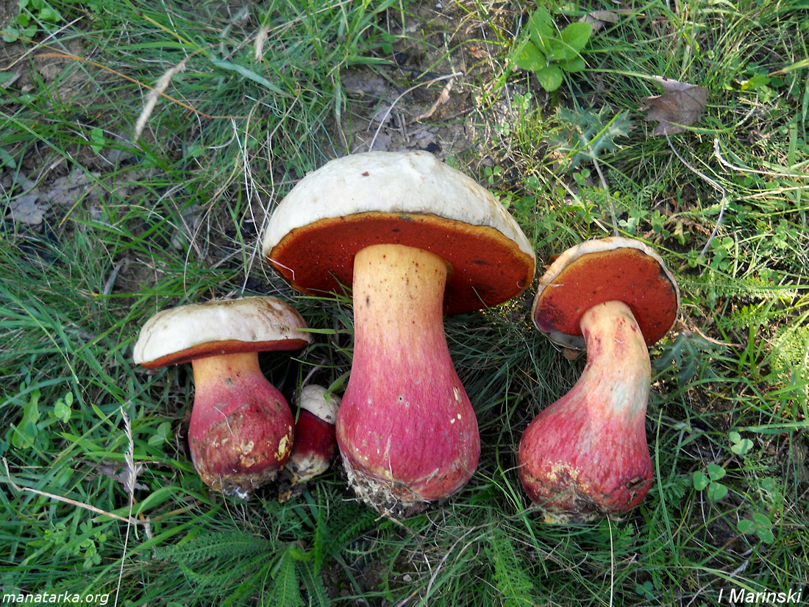
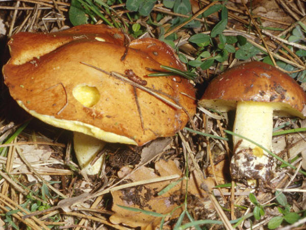
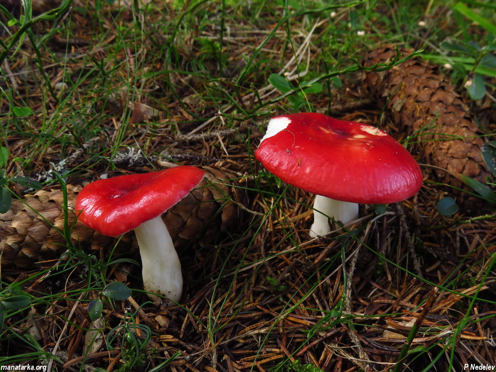
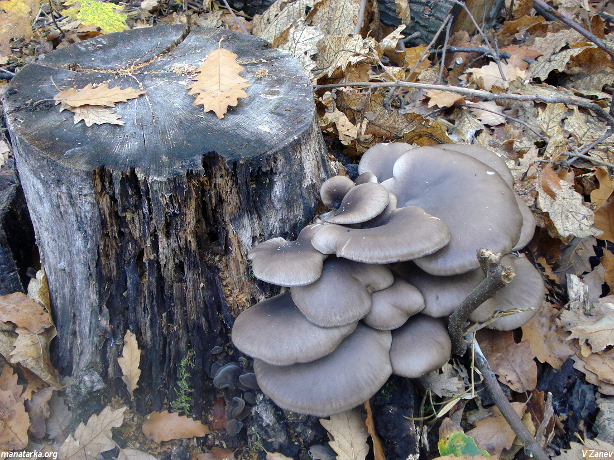
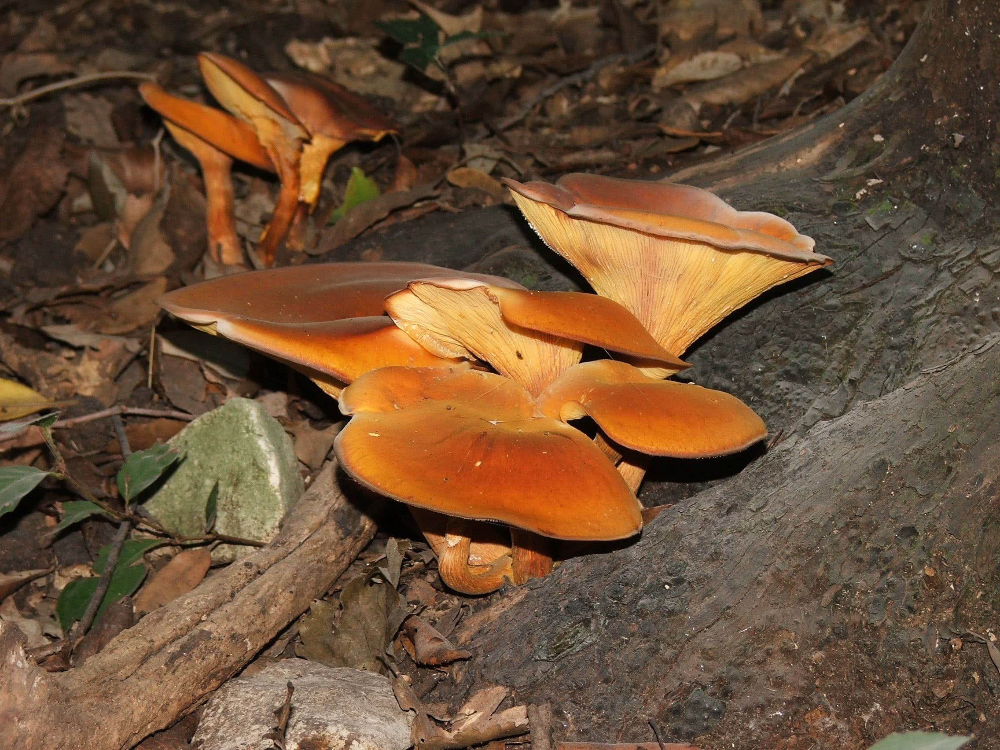
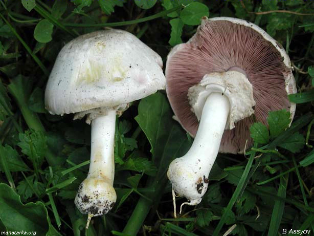
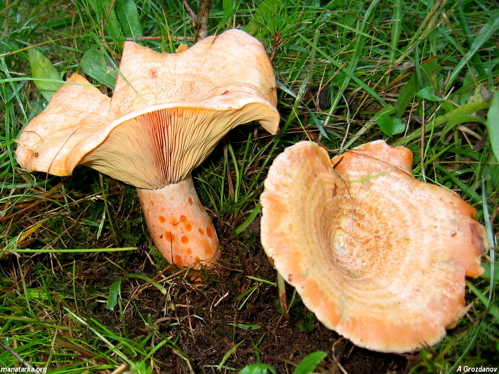
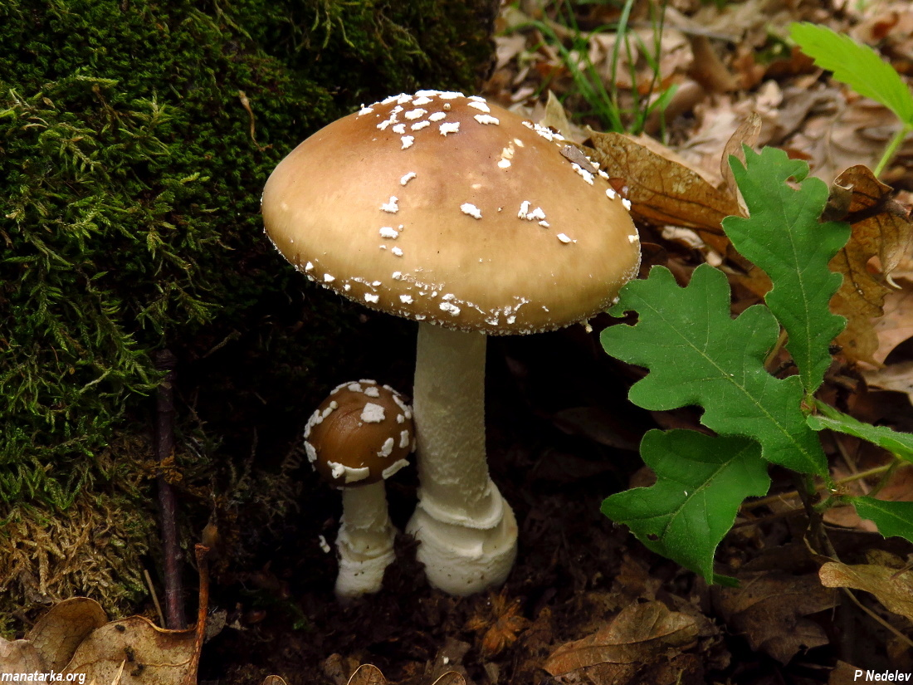

Ядлива
Ядлива
Обикновена Манатарка
Boletus edulis
 Отровна
Отровна
Червена Мухоморка
Amanita muscaria
 Ядлива
Ядлива
Пачи Крак
Cantharellus cibarius
 Отровна
Отровна
Зелена Мухоморка
Amanita phalloides

Ядлива
Сърнела
Macrolepiota procera

Отровна
Дяволска гъба
Rubroboletus satanas

Ядлива
Обикновена Масловка
Suillus luteus

Отровна
Бясна гъба
Russula emetica

Ядлива
Кладница
Pleurotus ostreatus

Отровна
Омфалотус (Маслинова гъба)
Omphalotus olearius
 Ядлива
Ядлива
Полска Челадинка
Marasmius oreades

Отровна
Карболова печурка
Agaricus xanthodermus

Ядлива
Рыжика
Lactarius deliciosus

Отровна
Пантерка
Amanita pantherina